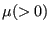
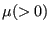

Keyword type: model definition, material
This option is used to define the conductivity coefficients of a material. There is one optional parameter TYPE. Default is TYPE=ISO, other values are TYPE=ORTHO for orthotropic materials and TYPE=ANISO for anisotropic materials. All constants may be temperature dependent. The unit of the conductivity coefficients is energy per unit of time per unit of length per unit of temperature.
First line:
Following line for TYPE=ISO:
Following line for TYPE=ORTHO:
Following line for TYPE=ANISO:
Example: *CONDUCTIVITY 50.,373. 100.,573.
tells you that the conductivity coefficient in a body made of this material is  at and
at and  at . Below its value is set to
at . Below its value is set to  , above it is set to
, above it is set to  and in between linear interpolation is applied.
and in between linear interpolation is applied.
Example files: beamhtbo, oneel20fi.